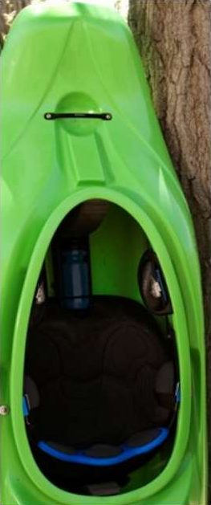
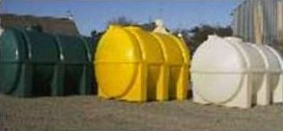
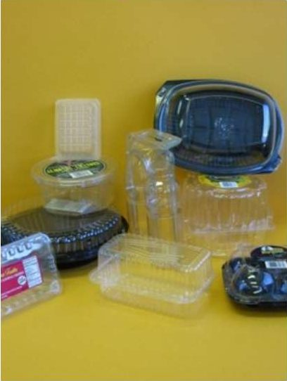

Rotomoulage et thermoformage
Une citerne d'eau pour un centre de santé, un blister qui protège chaque comprimé : deux pièces sans rapport, mais toutes deux sans vis ni injection. L'une naît d'une poudre dans un moule qui tourne, l'autre d'une feuille chaude aspirée sur un moule.
Rotomoulage : c'est un moulage qui se fait en insérant la matière plastique sous forme de poudre dans un moule. En faisant faire des rotations au moule, qui est chauffé, on obtient des pièces creuses sans soudure ni collage. Exemples : citernes, kayaks, réservoirs, planches à voile (et, sur les photos du cours, un aéroglisseur). Indice : pièce creuse de toute dimension, avec un temps de cycle assez long (rentabilité).
Thermoformage :
- En chauffant la feuille de plastique, celle-ci se ramollit.
- On applique cette feuille encore chaude sur le moule.
- On y retire l'air contenu entre ce moule et la feuille.
Exemples : barquettes alimentaires, coques de bateaux, enseignes publicitaires. Indice : pièce plutôt mince, à coins arrondis et avec moins de finition ; on peut apercevoir la découpe au pourtour de la pièce. Les éléments thermoformés sortent en feuilles, avant leur découpage.
Déroulement d'un cycle de thermoformage, sur une machine avec moule, platine, table et pompe à vide :
- 1. chauffage.
- 2. montée du moule.
- 3. aspiration.
- 4. refroidissement.
- 5. démoulage.
Les polymères les plus couramment utilisés en thermoformage sont : polystyrène (PS), polyéthylène (PE), polypropylène (PP), polycarbonate (PC), acrylonitrile butadiène styrène (ABS), polychlorure de vinyle (PVC), polyméthacrylate de méthyle (PMMA), polystyrène choc (SB). Tous sont des thermoplastiques : ils se ramollissent quand on les chauffe, ce que demande la première étape du cycle.
| Rotomoulage | Thermoformage | |
|---|---|---|
| Matière de départ | poudre | feuille |
| Principe | moule chauffé en rotation | feuille chauffée, plaquée sur le moule par aspiration de l'air |
| Pièce obtenue | creuse, sans soudure ni collage, de toute dimension | mince, ouverte, à coins arrondis |
| Exemples du cours | citernes, kayaks, réservoirs, planches à voile | barquettes alimentaires, coques de bateaux, enseignes |
| Indice | pièce creuse, cycle assez long (rentabilité) | découpe au pourtour, moins de finition |



À retenir
Rotomoulage : poudre + moule chauffé en rotation = pièce creuse sans soudure ni collage ; cycle assez long.
- Thermoformage : feuille chauffée + moule + aspiration de l'air.
- Cycle : chauffage, montée du moule, aspiration, refroidissement, démoulage.
- Indice : découpe au pourtour.
Matières du thermoformage : PS, PE, PP, PC, ABS, PVC, PMMA, SB.